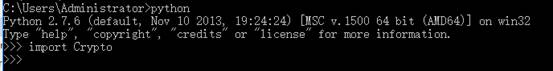
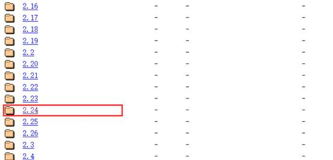
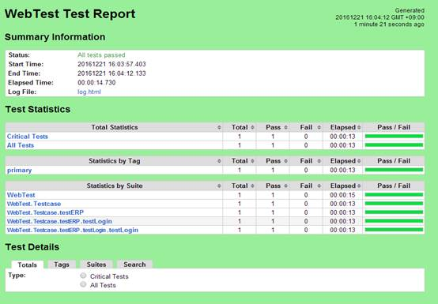

RobotFramework+Selenium2Library安装步骤及简单使用
环境安装
批处理安装测试环境
step1:下载“环境安装文件夹”
https://github.com/yuhuixu/Robotframework-Web-
step2:双击运行” 环境安装 - exe安装.bat”
该批处理会自动安装,但是欠缺的是点击下一步无法自动化,带后续改进
在安装” autoit-v3-setup.exe”时切记得勾选x64
python-2.7.13.amd64.msi
pycrypto-2.6.win-amd64-py2.7.exe
VCForPython27.msi
wxPython2.8-win64-unicode-2.8.12.1-py27.exe
pywin32
autoit-v3-setup.exe
step3:双击运行” 环境安装 - python库.bat”
这里没有需要手动的地方,如果报错请截图发给我,谢谢
手动安装测试环境
将环境安装文件夹下载到本地
https://github.com/yuhuixu/Robotframework-Web-
安装python2.7
step 1: 当前目录python安装包（win-64位）
python-2.7.13.amd64.msi
step 2: 双击安装，全部默认设置
step 3: 安装完成，在C盘显示Python27文件夹，如图所示
step 4: 设置 c:\python27到系统环境变量
安装pip（即C:\Python27\Scripts\pip.exe）
step 1: cmd命令行进入当前目录pip-9.0.1文件夹路径(E: \环境安装文件夹\pip-9.0.1)
cd E: \环境安装文件夹\pip-9.0.1\
step 2: 到目录下面，在命令行模式执行 python setup.py install 命令。
step 3: 检查python27目录下是否出现了script文件夹，应该如图所示
step 5: 将c:\python27\scripts 和 c:\python27 添加到环境变量，添加方式如下图所示

将路径c:\python27\scripts;c:\python27 放入系统环境变量
step 6: 安装pip
在cmd中运行 easy_install pip
检查是否安装成功: pip -V (注意大写的V)
检查已安装了什么包 pip list，后续可以检查已安装什么包，以及包的版本。
安装 WxPython
step 1:从环境安装包找到wxPython2.8-win64-unicode-2.8.12.1-py27.exe
step 2: 双击执行
step 3: 检查是否安装成功
在cmd命令行中输入python，然后输入import wx，不报错即可,如下图所示
安装 PyCrypto
step 1: 从环境安装包中找到pycrypto-2.6.win-amd64-py2.7.exe
step 2: 双击执行
step 3: 检查是否安装成功
在cmd命令行中输入python，然后输入import Crypto，不报错即可

安装VCForPython27.msi
step 1: 从环境安装包中找到VCForPython27.msi
step 2: 双击执行,点击下一步
step 3: 安装不报错即可,以及其他不报类似如下错误
error: Unable to find vcvarsall.bat
安装pywin32
step 1: 从环境安装包中找到pywin32-220.win-amd64-py2.7.exe
step 2: 双击执行
step 3: 安装过程中未报错即可
备注:用来解决解决导入pywin32相关模块报找不到相关模块问题
安装autoit-v3-setup.exe
step 1: 从环境安装包中找到autoit-v3-setup.exe
step 2: 双击执行,过程中切记选择64位(跟你的python64位保持一致)
step 3: 安装过程中未报错即可,如果有流氓杀毒软件报错,请加入白名单.
安装AutoItLibrary-1.1
这里要求,cmd 用管理员身份打开
Cd 到AutoItLibrary-1.1目录,在cmd中执行python setup.py install
安装 RobotFramework
在cmd中执行命令pip install robotframework
安装 robotframework-ride
在cmd中，执行命令pip install robotframework-ride

安装Library
selenium2library (用来做web测试)
在cmd中执行 pip install robotframework-selenium2library
同上，安装表格和数据库支持库
pip install robotframework-excellibrary
pip install PyMySQL
pip install robotframework-databaselibrary
Appiumlibrary
这里不做详细描述（用来做移动端测试，包括android和IOS，appium简易使用方法Robot Framework +Appium的简单教程及实例）
设置chromedriver
step 1：获取chrome版本
打开控制面板-程序和功能
找到chrome，并查看版本，比如我的是52版本
step 2：查找对应版本的chromedriver版本
打开链接selenium之 chromedriver与chrome版本映射表，并找到chromedriver版本为2.24
step 3：下载chromedriver
打开链接http://chromedriver.storage.googleapis.com/index.html，并进入2.24文件夹，选择chromedriver_win32.zip下载并解压缩。如下图所示：


step 4: 将chromedriver文件夹加入系统变量path
定位到桌面，右击 我的电脑-》选择属性-》选择 高级系统设置-》选择 环境变量

解压下载的chromedriver_win32.zip压缩包，将该路径，比如“E:\driver\chromedriver_win32;”放入系统变量Path中，或者直接放在“C:\Python27”目录下。

step 5:验证chromedriver是否添加到环境变量
重新打开cmd命令行输入chromedriver
设置firefoxdriver
TBD
https://github.com/mozilla/geckodriver/releases
RIDE 使用
guide文档
http://robotframework.org/robotframework/#user-guide
打开RIDE
安装成功后，在cmd命令执行命令ride.py，如图1 所示
图1. 命令行启动ride
打开之后就可以进行创建测试项目，创建测试用例等操作，在后面的实例讲解中有具体步骤。
如图 2 所示。
图 2.RIDE 编辑器启动界面
创建测试项目
选择菜单栏 File ―>New Project
Name输入项目名称 test，选择 Type为Directory。
图 3. 创建测试项目
创建测试套件
右键点击刚创建的测试项目，选择 New Suit，
Name输入 testsuit, Type选择 File 。
图 4. 创建测试套件
创建测试用例
右键点击刚创建的测试套件，选择 New TestCase，
Name输入名称 testcase。
图 5. 创建测试用例
导入库
Step1：点击页面右侧 ，输入Selenium2Library，然后点击OK按钮即可
图 6. 导入测试库
Step2：验证是否添加库成功，如图中Selenium2Library显示为黑色即为成功，如果显示为红色即为失败
编写代码
Open browser https:\\www.baidu.com browser=chrome
图7.编写代码
保存工程
快捷键：ctrl+shift+s（保存整个工程），ctrl+s（局部保存，只保存鼠标点击的部分）
运行测试
点击Run Tab页，勾选testcase，默认选择pybot，点击运行测试按钮
图8.运行测试
查看结果
等待测试结束，可以在主页面看到测试结果，也可以到页面上方，点击查看报告和日志详情，具体如图所示
测试日志 （快捷键ctrl+L）
测试报告（快捷键ctrl+R）

查询API
例如查询open browser方法的使用方式
按F5键调出search keyword窗口，输入open，source选择selenium2library
也可以到svn查看Selenium2Library的API文件
svn://172.16.10.3/Test data/新版测试文档入口/自动化代码/WebTest/setup_doc/Selenium2Library参考API.html
图9.查询API
SVN代码运行
下载脚本
从svn下载脚本文件夹WebTest
svn://172.16.10.3/Test data/新版测试文档入口/自动化代码/WebTest
Ride运行
Step 1：从Ride打开脚本文件夹
在ride中，点击File-》Open Directory，选择下载好的WebTest文件夹
打开完成后如图所示（代码详细描述见WebTest\readme.txt）
step 2: 运行testcase
先取消勾选，防止意外勾选其他case，右击WebTest文件夹，选择Deselect All Tests
勾选测试case，运行，并查看结果
常见问题
1. 不要修改浏览器的显示比例,容易造成ui操作错误
2. 浏览器版本过低的报错信息：
WebDriverException: Message: unknown error: Chrome version must be >= 31.0.1650.59
from unknown error: version info doesn't include string 'Browser'
(Driver info: chromedriver=2.9.248315,platform=Windows NT 5.1 SP3 x86)
解决办法：重新下载对应浏览器的驱动chromedriver
3. 浏览器驱动变量添加错误的报错信息：
WebDriverException: Message: 'chromedriver' executable needs to be in PATH.
解决办法：将chromedriver路径设置到环境变量Path里去
4. url网址填写错误
{"code":-32603,"message":"Cannot navigate to invalid URL"}
www.baidu.com修改成https://www.baidu.com
5. 导入Collections等本地库失败
提示log信息
20161229 17:11:07.369 [WARN]: Importing test library "Collections" failed
Traceback (most recent call last):
Importing test library 'Collections' failed: ImportError: cannot import name is_string
解决办法：先重装robotframework-ride，如果还不能解决，重新安装robotframework
6. 提示option --monitorcolors not recognized
还米有遇到，待定
7. Unable to find vcvarsall.bat
解决办法：安装VCForPython27.msi
参考文档
Robotframework-首页
Robotframework-user guide